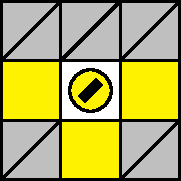
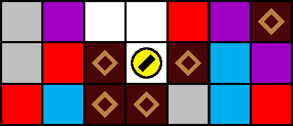
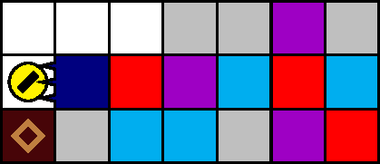
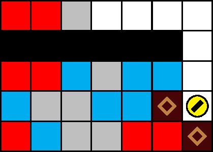
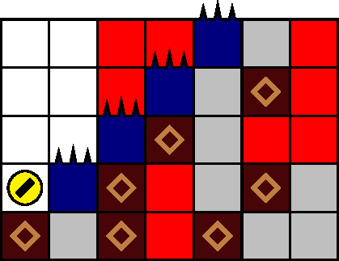
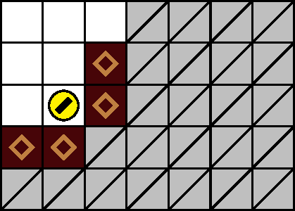

一般指針
愚形・ヘコミ






指針
画面下方に常に注意して，回避可能なヘコミには極力進入しません．上方が不安定なまま回避可能なヘコミに進入した場合，上昇可能ならば即座に上昇し，さもなければ周囲の塊を破壊することで，可能な限り即座に離脱します．回避不能なヘコミに対しては，上方の安定を確保して進入するか，さもなければ進入後直ちに直下の塊を破壊し潜行，離脱します．
限定的な状況を除いて，±3 列を潜行しません．
解説
犬の座標が狭義のヘコミであるとは，図 3.4.1.1 のすべての黄色マスに，塊，壁または針が位置することをいいます．ただし，壁は ±4 列に位置してもよいです: 同じことですが，犬は ±3 列に位置してもよいです．図 3.4.1.2–3.4.1.5 は，ステージにおけるヘコミの出現例です．
ヘコミ \(h\) が回避不能であるとは，すべての潜行経路が \(h\) に進入することをいいます．ヘコミが回避可能であるとは，回避不能でないことをいいます．図 3.4.1.2 と図 3.4.1.3 は回避可能，図 3.4.1.5 は回避不能なヘコミです．図 3.4.1.4 は，直前の状況によっては回避可能な場合と回避不能な場合の両方があり得ます．
+3 列の右方と −3 列の左方はすべて壁からなるため， ±3 列はヘコミが出現しやすい傾向にあります．このため，ヘコミを回避するうえでは， ±3 列の潜行は推奨されません．
ヘコミに進入すると，側面直上にブロックが落下または残置することで，上昇によっては脱出できなくなることがあります．このとき，犬上方の落下ブロックに対処することは困難です．圧迫を避けるためには，そもそもヘコミに進入すること自体を避けるべきです．ヘコミに進入した場合は直ちに，上昇または周囲の塊の破壊によってヘコミから離脱します．
200 m型および 500 m型においては，図 3.4.1.3 のようなヘコミにザクロが配置されることがあります．この場合，ヘコミに進入した後直ちに離脱しなければ左針による刺突を受けます．ここでさらに左針上方の安定を確保していない場合，刺突を回避しようとして落下ブロックに圧迫される危険もあります．しかも，来た経路を引き返すことはそれ自体圧迫のリスクを伴います（「愚形・迷子犬」も参照）．寿命確保の必要がある場合，当該ザクロは，左針直下に回り込んで直左の塊を破壊することにより，上方ではなく下方から取得します．
100 m, 400 m, 900 m型においては，図 3.4.1.4 のように，狭窄直後のヘコミが出現することがあります．狭窄上方の安定を常に確保してからこれを通過するのは迂遠ですが，この確保を怠ったためにヘコミで圧迫されたり，離脱が間に合わずレーザーに照射されたりする可能性もあります．そこで，これら階層において端の狭窄が出現した場合は次のようにします: まず，狭窄を通過する前に，ヘコミの有無を確認します．ヘコミがあるときは，これに進入せずに（狭窄通過後すぐ横移動して）潜行する経路がないか計算します．そのような経路がないときにはじめて，狭窄上方の安定を確保し，ヘコミを通過します．
1100 m型および 1200 m型においては，図 3.4.1.5 のように，階段の最下段にヘコミが出現することがあります（「エリア・階段」も参照）． 1100 m型においては，階段に着地した後にヘコミ上方の安定を確保してから通過することが可能です． 1200 m型においては階段に着地すると結局刺突を受けるため，ヘコミの有無を確認してから経路および行動を策定することは困難です．両階層において一般的に，ヘコミが出現しても安全性に影響のないよう，なるべく早い段階で階段の種類を同定し，狭窄列へ移動することが推奨されます．各階層における詳細は「1100 m型指針」および「1200 m型指針」を参照してください．
図 3.4.1.6 などは広義のヘコミにあたる地形です．これらへの進入も，狭義のヘコミに対するものと同じ理由で，極力避けるべきです．
針ヘコミは形式的にはヘコミをもちますが，その形状により進入は故意にしか起こらないため，別に定跡として解説します．針ヘコミは，寿命確保の必要がある場合，周囲の状況が安定してから進入します．定型経路は「定跡・針ヘコミ」を参照してください．